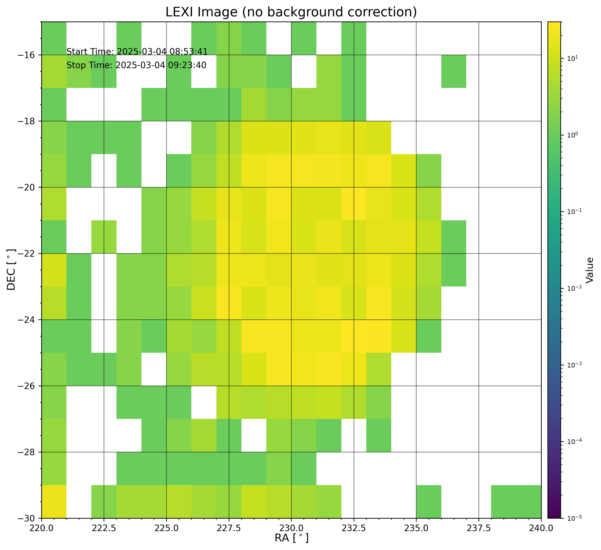

[1]:
from lexi_bu.lexi import get_lexi_images
lexi_images_dict = get_lexi_images(
time_range=["2025-03-04 08:53:41", "2025-03-04 09:23:41"],
ra_range=[220, 240],
dec_range=[-30, -15],
ra_res=1,
dec_res=1,
background_correction_on=False,
save_exposure_map_file=False,
save_sky_backgrounds_file=False,
save_exposure_map_image=False,
save_sky_backgrounds_image=False,
save_lexi_images=True,
verbose=False,
array_to_image_kwargs={"display": True}
)
print(lexi_images_dict.keys())
Downloading files from data/level_1c/cdf/1.0.0 on branch stable:
A total of 1917 files found
Files to download: 8
[Timestamp('2025-03-04 08:53:41+0000', tz='UTC')]

dict_keys(['lexi_images', 'ra_arr', 'dec_arr', 'time_range', 'time_integrate', 'ra_range', 'dec_range', 'ra_res', 'dec_res', 'start_time_arr', 'stop_time_arr'])